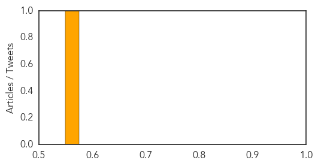
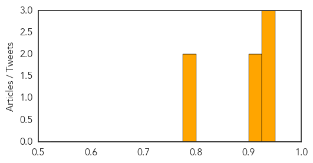

Meningitis
30-Day Web Trend
0 alerts, 0 warnings

30-Day Twitter Trend
0 alerts, 0 warnings

Article Locations

Article Confidences
Top Articles:
Top Tweets:
-
No tweets found for Jul 23, 2014
Measles
30-Day Web Trend
0 alerts, 0 warnings
30-Day Twitter Trend
0 alerts, 0 warnings

Article Locations

Article Confidences
Top Articles:
- 0.943
- Measles: What To Know During Local Outbreak
- 0.930
- Measles case reported in Tarrant County
- 0.926
- Measles case confirmed in Northeast Tarrant County
- 0.907
- Could Resistance to Antibiotics be the Next Global Pandemic? CDC Director Weighs In
- 0.907
- Measles case confirmed in Northeast Tarrant County
- 0.798
- Tarrant County measles case has possible Dallas County connections
- 0.792
- Health Situation Report #10 - Pakistan: North Waziristan Displacement - Pakistan
Top Tweets:
-
No tweets found for Jul 23, 2014